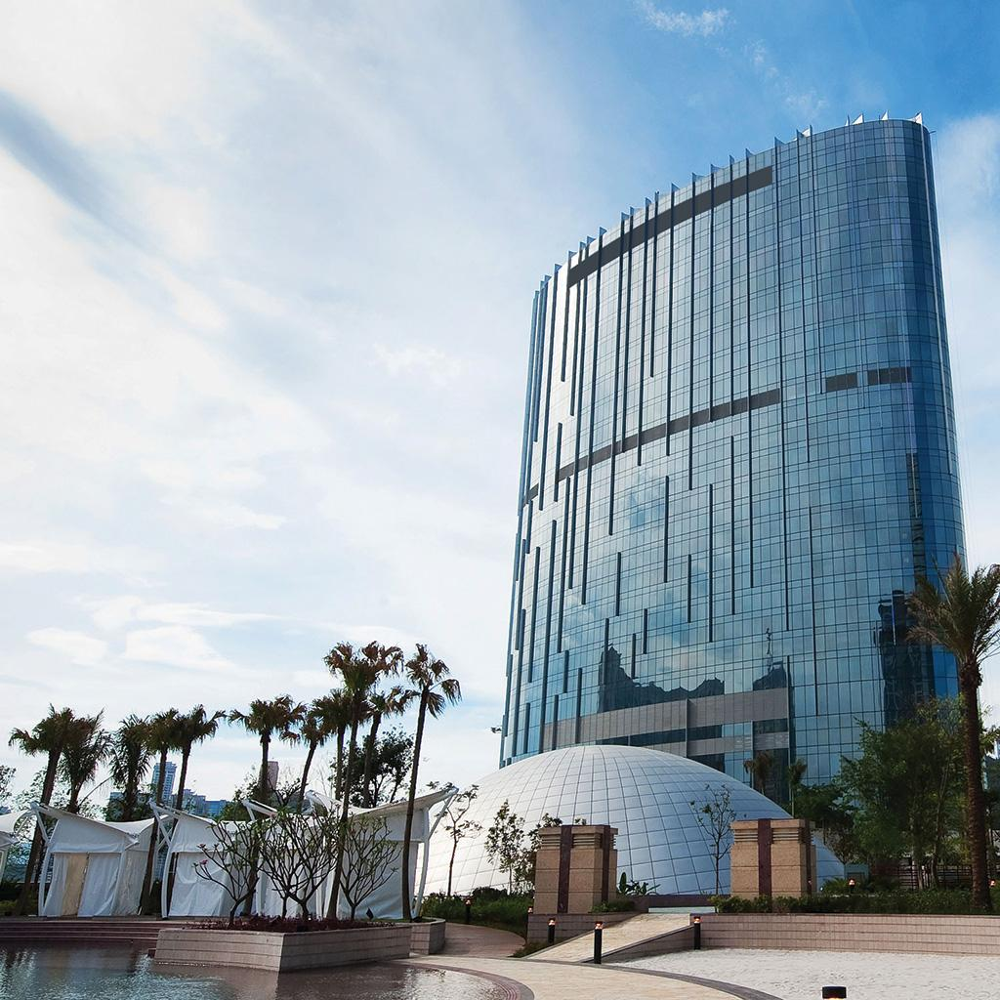

gokwetten variëren per land in Azië. Controleer de plaatselijke regelgeving voordat u gaat spelen.
Ontdek onze gids met Aziatische casinoresorts, waar luxe en opwinding samenkomen op enkele van de meest levendige bestemmingen van het continent. Van de glinsterende lichten van Macau tot het tropische paradijs Singapore: ontdek de beste casinoresorts, eetervaringen en activiteiten die op je wachten in deze iconische gamebestemmingen.

Ervaar de grandeur van Venetië in The Venetian Macao, met een uitgestrekte casinovloer, luxe accommodaties en entertainment van wereldklasse.

Ontdek het toppunt van luxe in Marina Bay Sands, de thuisbasis van een adembenemend overloopzwembad op het dak, designerboetieks en een ultramodern casino.

Dompel jezelf onder in de spanning bij City of Dreams, met een uitgebreide selectie aan spelopties, bekroonde restaurants en spectaculaire liveoptredens.